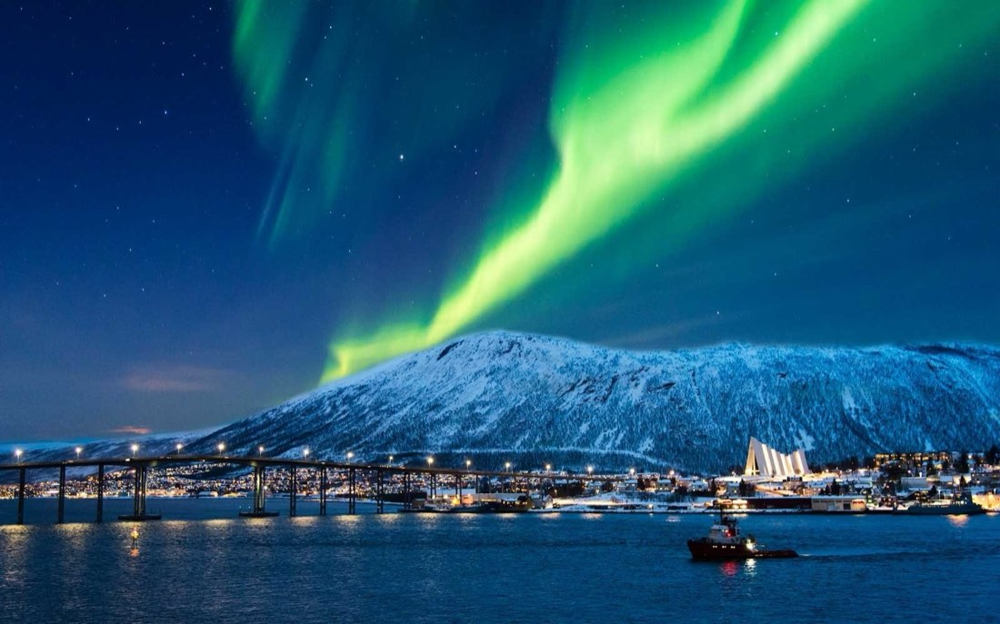

Rusya Lapland Kuzey Işıkları Turu
Tur bilgileri
- Tarih
- 29.01.2027 – 04.02.2027
- Süre
- 6 gün
- Güzergâh
- Moskova, Murmansk, St. Petersburg
- Otel
- 4 Yıldız
- Vize
- Rusya vizesi gerekli (e-vize; yeşil pasaporta gerekmez)
- Ulaşım
- Uçak
- Havayolu
- Türk Hava Yolları, Yerel havayolu
Rota haritası
Şehir etiketine dokunun; programın o günü açılsın.
Fiyatlar
| İki Kişilik Odada Kişi Başı (erken rezervasyon) | €2.600 |
|---|---|
| Tek Kişilik Oda (erken rezervasyon) | €3.000 |
| 0 - 1 Yaş | €250 |
|---|---|
| 2 - 5 Yaş | €2.500 |
| 6 - 11 Yaş | €2.550 |
* Erken rezervasyon fiyatıdır; erken rezervasyon koşulları için bize ulaşın.
* Fiyatlar kişi başı, EUR; tüm yurt dışı yerel vergiler dahildir.
* 5 gece / 6 gün.
* Ekstra tur ödemesi yoktur.
* Kuzey ışıkları bir doğa olayıdır; görülmesi hava koşullarına bağlıdır ve garanti edilemez.
Tur programı
1. Gün: İstanbul – Moskova
İstanbul Havalimanı Dış Hatlar Terminali Giden Yolcu Salonu'nda güvenlik, check-in ve pasaport işlemleri sonrası THY'nin TK413 seferi ile 08.25'te Moskova'ya uçuyoruz (4 sa). Varış: 12.25. (Uçuş saatleri havayoluna bağlı olarak değişebilir.) Pasaport ve gümrük işlemleri sonrası yapacağımız şehir turumuzda Serçe Tepesi, Moskova Nehri, Tverskaya Caddesi, Bolşoy Tiyatrosu, Lubyanka Meydanı, Aziz Vasili Katedrali, Kızıl Meydan, GUM Alışveriş Merkezi, Arbat Caddesi ve Moskova Metrosu görülecek yerler arasındadır. Akşam yemeği sonrası konaklama otelimizde. 4* Holiday Inn Tagansky vb.
Önemli: Uçağımız Moskova'ya rötarlı inerse şehir turu vakit yettiğince yapılacağından bazı mekânlar görülemeyebilir.
2. Gün: Moskova – Murmansk
Otelde alacağımız kahvaltının ardından Moskova Havalimanı'na hareket ediyoruz. Yerel havayolu ile Murmansk'a uçuyoruz (3 sa). Murmansk, Rusya'nın kuzeybatısında, Norveç ve Finlandiya'ya kara sınırı olan bölgenin merkezidir. Varışta yapacağımız şehir turumuzda Alyoşa Anıtı, Kurtarıcı Kilisesi ve Deniz Feneri Anıtı göreceğimiz yerler arasındadır. Akşam yemeği sonrası konaklama otelimizde. 4* Azimut, 4* Meridian vb.
3. Gün: Murmansk – Husky Parkı – Kuzey Işıkları
Otelde alacağımız kahvaltının ardından Husky (Sibirya kurdu) ve Ren Geyiği Parkı'na doğru yola çıkıyoruz. Husky'lerle vakit geçirip ren geyiklerini besledikten sonra Husky Kızak Turu'na çıkıyoruz. Turumuzun ardından Murmansk'a dönüyoruz. Akşam yemeği sonrası Kuzey Işıkları'nı (Aurora Borealis) aramak üzere yola koyuluyoruz. Bu gece profesyonel bir fotoğrafçı da bize eşlik edecek. Hava koşulları uygun olursa bu etkileyici doğa olayına tanıklık edebiliriz. Turumuzun ardından konaklama otelimizde.
Önemli: Kuzey ışıkları her gece farklı şiddette görülen bir doğa olayıdır; bazı geceler çok güçlü, bazı geceler zayıf olabilir. Yüksek şiddette bile hava bulutluysa görülemeyebilir. Görme ihtimalini artırmak için Murmansk'ta 3 gece konaklanır. Kuzey ışıkları konusunda uzman rehberimiz görme ihtimalinin daha yüksek olduğu geceyi seçerse tur bir gün önce veya sonra yapılabilir. Kuzey ışıkları turunun yapıldığı gece otele geç saatte dönülür.
4. Gün: Murmansk – Buzlu Suda Yüzme Aktivitesi
Otelde alacağımız kahvaltının ardından kuzeyin buz tutmuş sularında, buzlar arasında özel su geçirmez kıyafetlerle yüzme aktivitesine katılıyoruz. Nükleer enerjiyle çalışan ilk buzkıran olan Lenin Gemisi'ni ziyaret ediyoruz. Akşam yemeği sonrası konaklama otelimizde.
5. Gün: Murmansk – St. Petersburg
Otelde alacağımız kahvaltının ardından Murmansk Havalimanı'na hareket ediyoruz. Yerel havayolu ile St. Petersburg'a uçuyoruz. Varışta yapacağımız panoramik şehir turumuzda Nevski Prospekt Caddesi, Stroganov Sarayı, Kazan Katedrali, Smolny Manastırı, Aniçkov Sarayı, Aniçkov Köprüsü ve Kanlı Kurtarıcı Kilisesi göreceğimiz yerler arasındadır. Akşam yemeği sonrası konaklama otelimizde. 4* Meridian vb.
6. Gün: St. Petersburg
Otelde alacağımız kahvaltının ardından Hermitage (Ermitaj) Müzesi'ne hareket ediyoruz. 18. yüzyılda kışlık saray olarak inşa edilen Hermitage, bugün dünyanın dört bir yanından binlerce esere ev sahipliği yapan bir müzedir. Ardından altın kubbesiyle St. Petersburg'un simgelerinden Saint Isaac Katedrali'ni ziyaret ediyoruz. Sonrasında matruşka bebekler, kehribar takılar ve hatıralık eşyaların bulunduğu bir hediyelik eşya mağazasına uğruyoruz. Serbest zaman ve akşam yemeği sonrası St. Petersburg Havalimanı'na hareket ediyoruz.
Önemli: Uçak saatinden dolayı bu gece otel konaklaması yoktur.
7. Gün: St. Petersburg – İstanbul
St. Petersburg Havalimanı'nda check-in ve pasaport işlemlerinin ardından THY'nin TK404 seferi ile 02.30'da İstanbul'a uçuyoruz (4 sa). Varış: 06.25. (Uçuş saatleri havayoluna bağlı olarak değişebilir.)
Fiyata dahil olanlar
- THY ile İstanbul / Moskova - St. Petersburg / İstanbul gidiş-dönüş ekonomi sınıfı uçak bileti ve vergileri
- Moskova / Murmansk arası tek yön uçak bileti ve vergileri
- Murmansk / St. Petersburg arası tek yön uçak bileti ve vergileri
- 5 gece 4 yıldızlı otellerde konaklama
- 5 kahvaltı
- Kuzey ışıkları turu ve profesyonel fotoğrafçı hizmeti
- Husky kızak turu
- Buzlu suda özel kıyafetlerle yüzme aktivitesi
- Ermitaj Müzesi, Moskova Metrosu, Husky ve Ren Geyiği Parkı ve Saint Isaac Katedrali giriş ücretleri
- Programda adı geçen tüm transferler
- Türkçe rehberlik hizmeti
- Seyahat sigortası
- Tüm yurt dışı yerel vergiler
Fiyata dahil olmayanlar
- Rusya vizesi ve hizmet bedeli 100 € (yeşil pasaporta vize gerekmemektedir); e-vize başvurusu firmamızca yapılır
- 6 akşam yemeği (misafirlerimiz yerinde ödeme yaparak restoranlarda yemek yiyebilir; helal yemek yönlendirmesi yapılır)
- Diğer şehirlerden İstanbul'a iç hat bağlantı uçuşu ücreti
- Öğle yemekleri ve yemeklerde alınan kapalı su ve kapalı içecekler
- Yurt dışı çıkış harcı
- Program dışı talep edilecek turlar
- Kişisel harcamalar, otel ekstraları (oda servisleri, telefon vb.), bahşiş
- Programda dahil olduğu açıkça belirtilmemiş her türlü hizmet